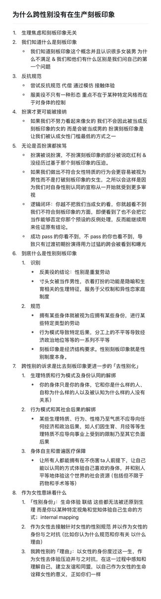
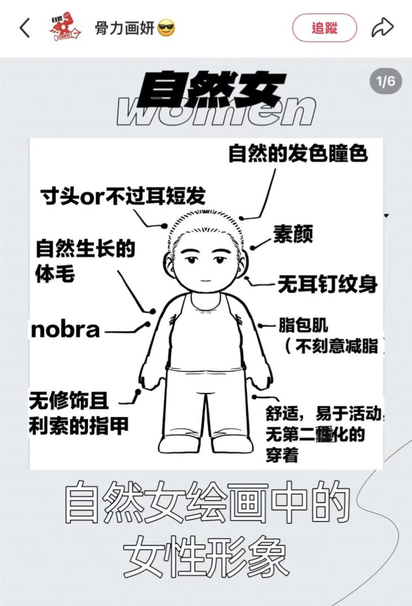
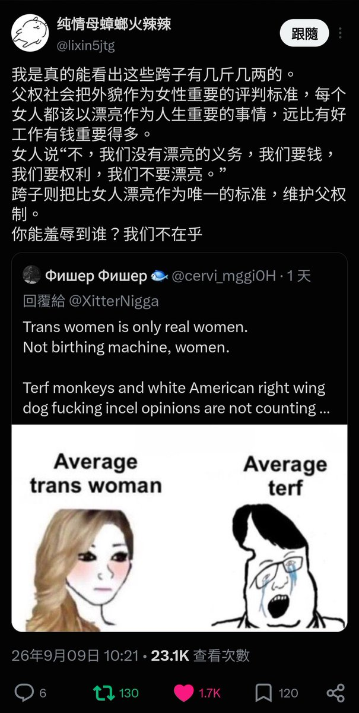

我真的懒得做这种支教了。➀说这种话的人大概率没见过跨女，很多跨女在日常生活中都是中性打扮。我同样可以说你这种纯粹基于意淫和网络色情作品对跨性别女性的指责，本身就是在加固父权制中「跨性别者只是扮演刻板印象」的这种刻板印象。
➁采用最规范的性别表达，对于大多数跨性别者来说，是让我们被认成自己认同的那个性别最简单的生存策略。你们不会把一个浑身肌肉的寸头跨女当成「打破刻板印象的女性」，而是会被直接当成会给女性造成危险的男性，从而使她遭到更进一步的排斥；我们之所以知道这一点，是因为这套性别规范就是曾经以同样的方式被暴力施加在我们身上的。当我们的身份在很多人眼中本身就不合法时，所谓「刻板印象」的指控一直以来发挥的，就是强迫我们通过暴露自己遭受暴力的功能。
➂在中国的官方医疗体系里，如果跨性别者想获取性别肯定药物或者申请手术，很多医生都会明确要求跨性别者表演出符合ta「社会性别」的装束（即扮演刻板印象），否则很可能会被认定为不够跨/不够坚定从而遭到拒绝。在这个意义上，扮演刻板印象就是我们为了能在自己认同的身体里过自己希望过的生活，而不得不采取的生存策略。
更多回应见图一；我真的不想再说这个题了太累了。
最后，给诸位展示一下原推这种脱美役派心目中最理想的女性形象（图二）。你们最崇拜的，就是父权制下最典型和理想的男性形象，你们认为这是便利和效率的代名词，认为所有选择装饰性服饰的人都愚蠢下作，所以所有性别表达偏传统女性的顺女也是你们羞辱的对象。因此，你们会遭遇和你们崇拜的那种形象的人同样的命运，因为我们女性拥有从始至终都拥有着关怀和团结所有人的创造力，拥有着解放整个世界的力量。

➁采用最规范的性别表达，对于大多数跨性别者来说，是让我们被认成自己认同的那个性别最简单的生存策略。你们不会把一个浑身肌肉的寸头跨女当成「打破刻板印象的女性」，而是会被直接当成会给女性造成危险的男性，从而使她遭到更进一步的排斥；我们之所以知道这一点，是因为这套性别规范就是曾经以同样的方式被暴力施加在我们身上的。当我们的身份在很多人眼中本身就不合法时，所谓「刻板印象」的指控一直以来发挥的，就是强迫我们通过暴露自己遭受暴力的功能。
➂在中国的官方医疗体系里，如果跨性别者想获取性别肯定药物或者申请手术，很多医生都会明确要求跨性别者表演出符合ta「社会性别」的装束（即扮演刻板印象），否则很可能会被认定为不够跨/不够坚定从而遭到拒绝。在这个意义上，扮演刻板印象就是我们为了能在自己认同的身体里过自己希望过的生活，而不得不采取的生存策略。
更多回应见图一；我真的不想再说这个题了太累了。
最后，给诸位展示一下原推这种脱美役派心目中最理想的女性形象（图二）。你们最崇拜的，就是父权制下最典型和理想的男性形象，你们认为这是便利和效率的代名词，认为所有选择装饰性服饰的人都愚蠢下作，所以所有性别表达偏传统女性的顺女也是你们羞辱的对象。因此，你们会遭遇和你们崇拜的那种形象的人同样的命运，因为我们女性拥有从始至终都拥有着关怀和团结所有人的创造力，拥有着解放整个世界的力量。



我真的懒得做这种支教了。➀说这种话的人大概率没见过跨女，很多跨女在日常生活中都是中性打扮。我同样可以说你这种纯粹基于意淫和网络色情作品对跨性别女性的指责，本身就是在加固父权制中「跨性别者只是扮演刻板印象」的这种刻板印象。 https://t.co/DWCP1BQyjF https://t.co/V1Y5aHGhFB